// Python/GO/VBA Automation
Python / GO / Excel VBA
Сервисные скрипты BIM-отдела, аналитика, мониторинг и инструменты автоматизации.
// Python/GO/VBA Automation
Раздел 1. Утилиты для Revit, Renga и Navisworks
Convert XLSX To TXT RevitTypeFamily
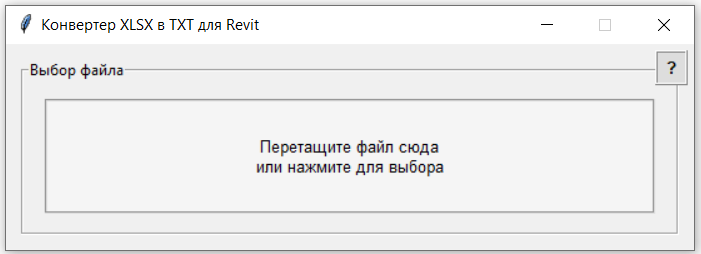
Конвертация таблиц Excel с типоразмерами семейств Revit в текстовые каталоги типов txt.
Ключевой функционал:• Парсинг строк и столбцов Excel с наименованиями и значениями параметров.
• Формирование текстового файла в строгом соответствии со спецификацией каталогов типов Autodesk Revit.
• Формирование текстового файла в строгом соответствии со спецификацией каталогов типов Autodesk Revit.
Преимущества:Устранения рутинных операций по конвертации Excel в требуемый формат данных Revit для загрузку типоразмеров в проект через стандартное окно выбора Revit.
NavisWorks XML Tool
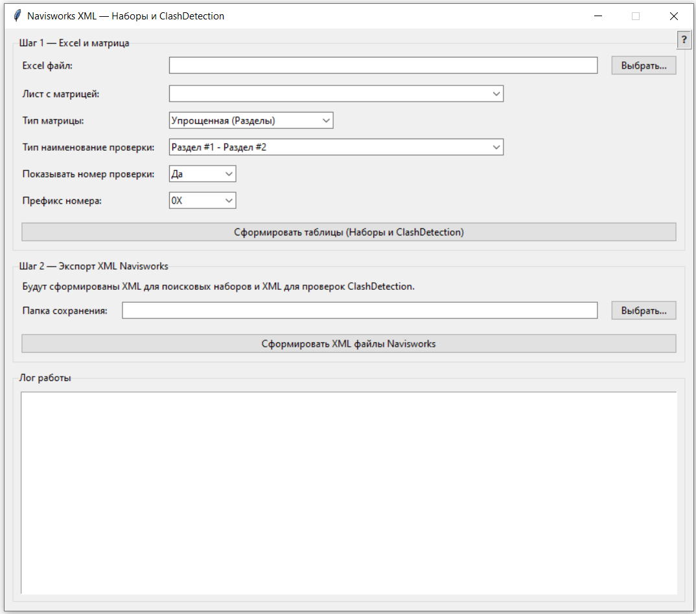
Автоматическое формирование поисковых наборов и проверок коллизий в Navisworks из матрицы коллизий.
Ключевой функционал:• Чтение структурированной матрицы коллизий двух различных представлений.
• Генерация .xml файлов для импорта в Clash Detective и поисковых наборов Navisworks.
• Генерация .xml файлов для импорта в Clash Detective и поисковых наборов Navisworks.
Преимущества:Убирает рутинную ручную сборку проверок коллизий при старте нового объекта.
NavisWorks XML в XLSX-HTML
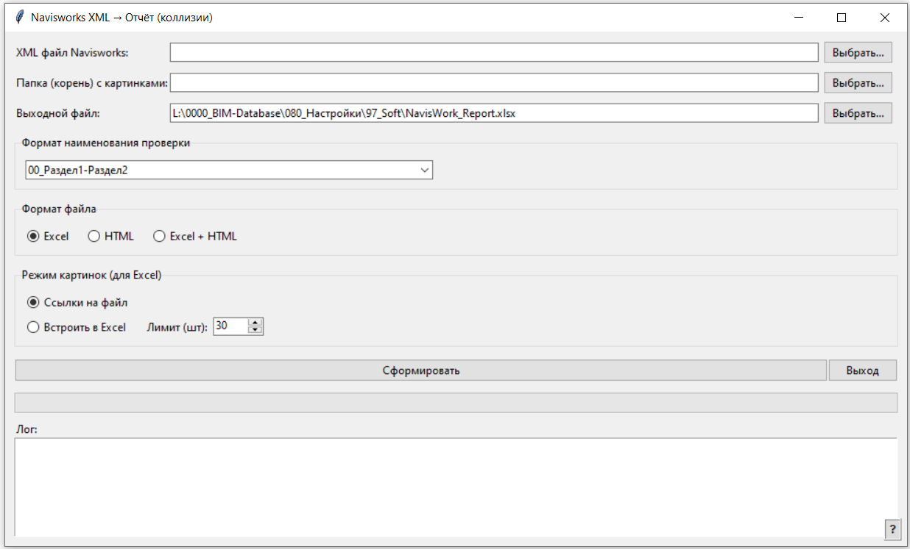
Конвертация отчетов по коллизиям из Navisworks (Clash Detective XML) в удобные веб-страницы (HTML) и таблицы (XLSX).
Ключевой функционал:• Преобразование XML в интерактивный HTML-отчет с наглядными иллюстрациями и фильтрами.
• Экспорт сводной таблицы коллизий в Excel.
• Экспорт сводной таблицы коллизий в Excel.
Преимущества:Делает отчёты по коллизиям читаемыми для проектировщиков, у которых не установлен Navisworks.
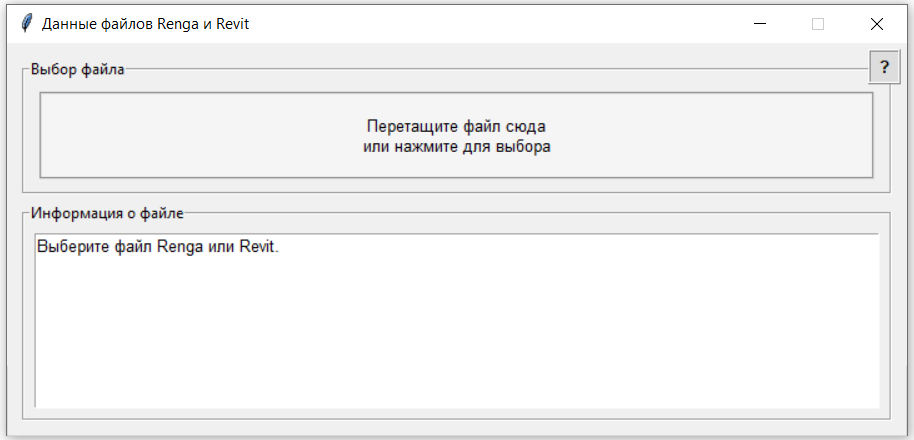
Быстрое определение версии программы (Revit / Renga), в которой был создан или сохранен файл модели.
Ключевой функционал:• Чтение заголовка и метаданных файлов без полноценного открытия тяжелых САПР приложений.
• Поддержка технологии Drag & Drop (перетаскивание файлов прямо в окно).
• Поддержка технологии Drag & Drop (перетаскивание файлов прямо в окно).
Преимущества:Защищает от случайного обновления версий файлов при работе.
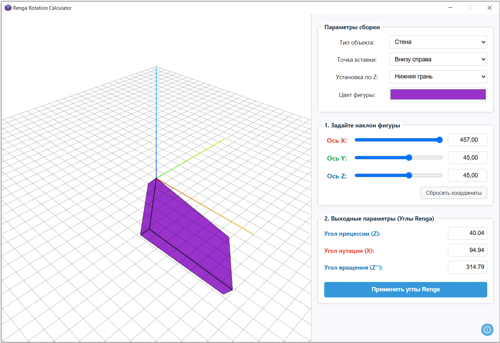
Визуальный инструмент предназначенный для наглядной конвертации интуитивных углов вращения (по осям X, Y, Z) в специализированную топологию углов Эйлера системы Renga (ZXZ: Прецессия, Нутация, Собственное вращение).
Ключевой функционал:
• Встроенные модели примитивов: Стены, Пирамиды, Уголка и Швеллера.
• Возможность загрузки пользовательских 3D-моделей в форматах .stl и .obj.
• Настройка точки привязки объекта.
• Возможность загрузки пользовательских 3D-моделей в форматах .stl и .obj.
• Настройка точки привязки объекта.
Преимущества:
• Интерактивная 3D-сцена с визуализацией положения детали в пространстве.
• Двусторонняя конвертация.
• Двусторонняя конвертация.
Start RevitPyPlugin
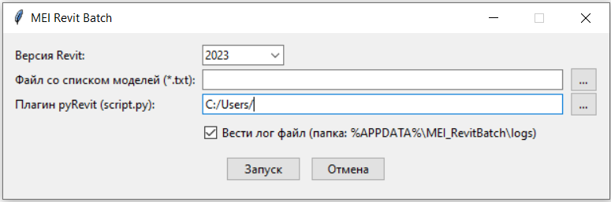
Пакетный запуск сессий Revit с последующим автоматическим исполнением pyRevit-скриптов.
Ключевой функционал:• Открытие моделей Revit в автоматическом режиме.
• Инициализация и выполнение сценариев на Python/pyRevit без участия пользователя.
• Инициализация и выполнение сценариев на Python/pyRevit без участия пользователя.
Преимущества:ПОдходит для построения автоматической обработки моделей.
TRM ZIP extractor
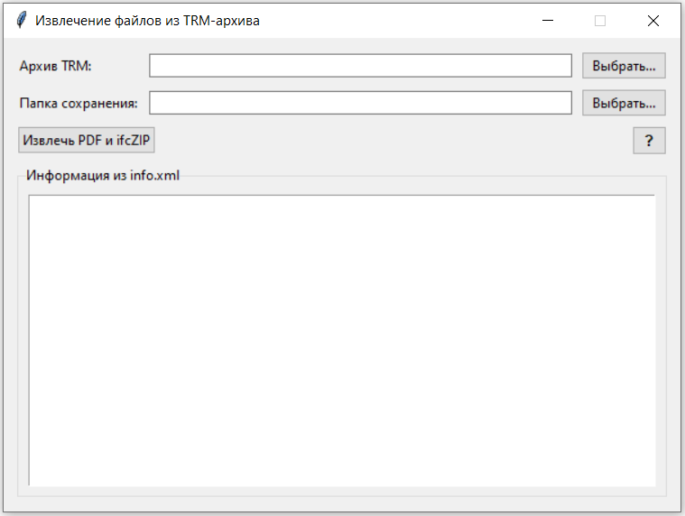
Анализ и корректная распаковка архивных файлов формата TRM, формируемых плагином 'СтроимПросто' для Revit.
Ключевой функционал:• Чтение структуры пакета TRM.
• Извлечение файлов в исходных форматах данных.
• Извлечение файлов в исходных форматах данных.
Преимущества:Позволяет оценить предоставляемые данные субподрядчиков.
GUI Запуск PowerShell Script
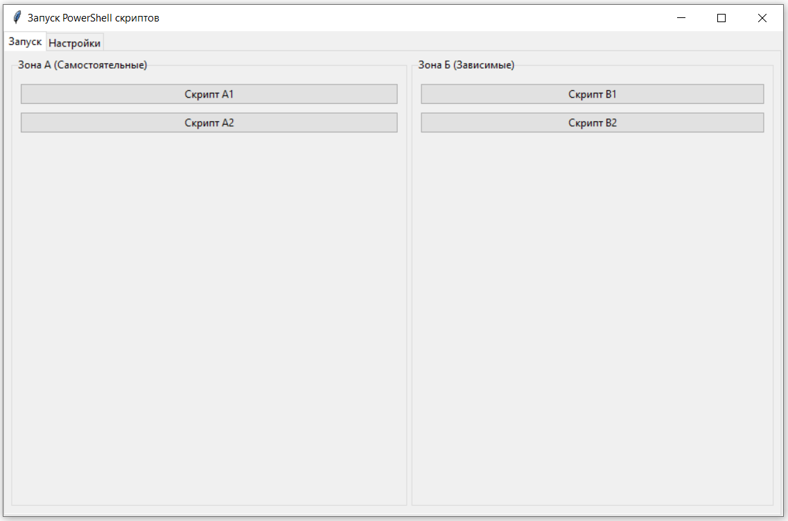
Единый графический интерфейс (GUI) для запуска корпоративных PowerShell-скриптов.
Ключевой функционал:• Консолидация всех служебных PowerShell скриптов, расположенных на сетевых ресурсах, в едином окне.
• Запуск сложных системных команд по нажатию одной кнопки без использования командной строки.
• Запуск сложных системных команд по нажатию одной кнопки без использования командной строки.
Преимущества:Упрощает использование скриптов сотрудниками, не обладающими навыками администрирования.
Раздел 2. Инструменты работы с IFC моделями
Проверка имен файлов моделей IFC в соответствии с Планом реализации проекта
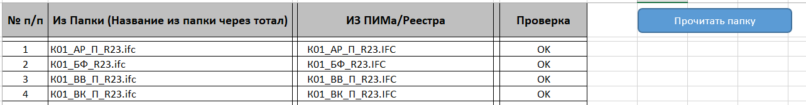
Валидация наименований файлов IFC-моделей на соответствие правилам Плана реализации проекта(ПИМ).
Ключевой функционал:• Считывание имён файлов из заданной рабочей директории в автоматическом режиме.
• Сравнение структуры наименования (коды объектов, разделы, стадии, авторы) с эталонным реестром ПИМ.
• Формирование наглядного отчета о выявленных отклонениях.
• Сравнение структуры наименования (коды объектов, разделы, стадии, авторы) с эталонным реестром ПИМ.
• Формирование наглядного отчета о выявленных отклонениях.
Преимущества:Предотвращает попадание некорректно названных файлов в общий контур обмена.
Генератор IDS файлов проверок IFC (IDS Generator)
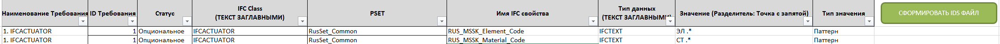
Быстрое создание файлов спецификаций информационных требований IDS (Information Delivery Specifications) для валидации IFC моделей.
Ключевой функционал:• Заполнение требований к атрибутам и классам IFC в привычной табличной форме Excel.
• Автоматическая сборка валидного xml/ids файла для специализированных чекеров.
• Автоматическая сборка валидного xml/ids файла для специализированных чекеров.
Преимущества:Исключает цепочки из десятков кликов мышью, характерные для внешних web-сервисов.
Преобразование табличных данных в JSON сопоставления параметров Renga -> IFC
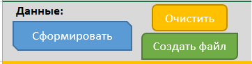
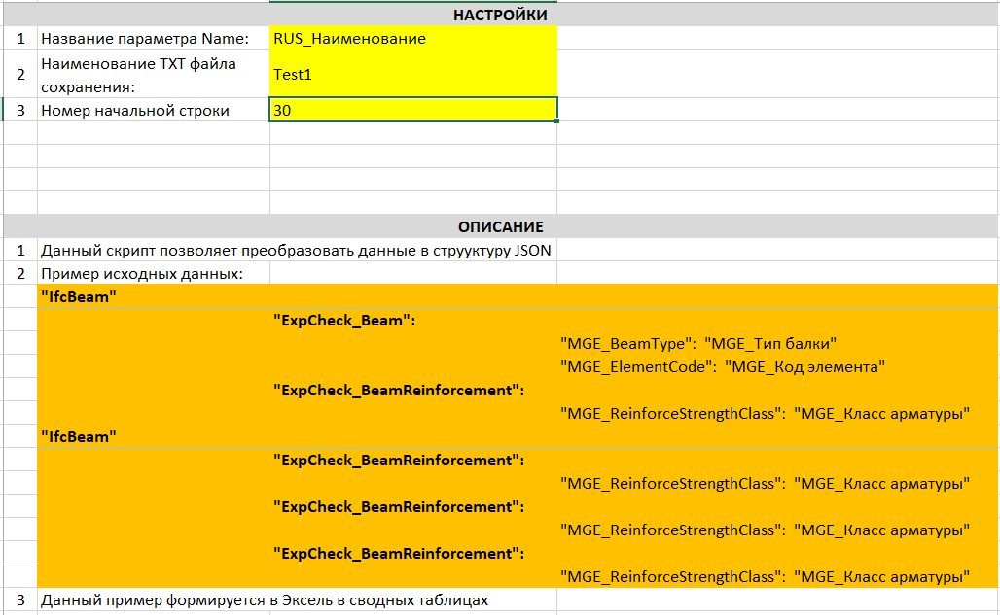
Автоматическое создание JSON-файлов маппинга (сопоставления) атрибутов Renga с классами и свойствами IFC.
Ключевой функционал:• Загрузка подготовленных табличных данных из отчета анализа параметров и требований заказчика (EIR).
• Автоматическая конвертация и структурирование данных в формат JSON, понятный конвертеру Renga.
• Возможность гибкой пользовательской настройки правил сопоставления.
• Автоматическая конвертация и структурирование данных в формат JSON, понятный конвертеру Renga.
• Возможность гибкой пользовательской настройки правил сопоставления.
Преимущества:Сокращает время настройки экспорта Renga->IFC.
Civil IFC Editor
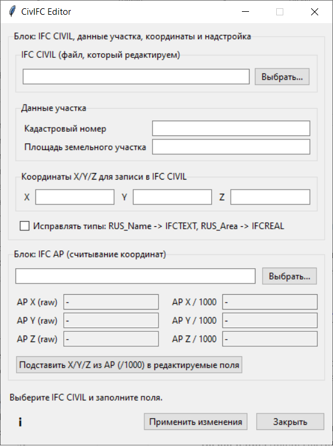
Приведение IFC-моделей, выгруженных из Autodesk Civil 3D, к требованиям Департамента градостроительной политики (ДГП).
Ключевой функционал:• Корректировка параметров и структуры вложенности элементов класса IfcSite.
• Добавление общих координат к файлам, для последующей консолидации моделей.
• Добавление общих координат к файлам, для последующей консолидации моделей.
Преимущества:Автоматически добавление необходимых данных в модель IFC выгруженной из Civil в соответствии с требованиями ДГП.
DXF/DWG to IFC
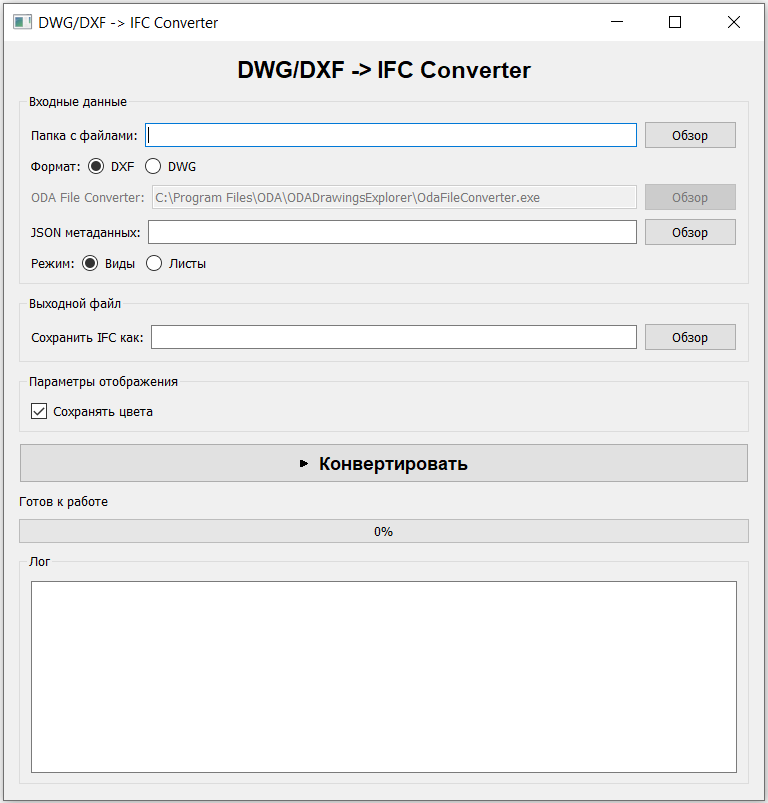
Преобразование плоских чертежей (DXF/DWG), выгруженных из Revit, в объемно-ориентированный IFC-контейнер.
Ключевой функционал:• Перенос оформительских видов, аннотаций, размеров и штриховок в IFC файл.
• Точного пространственного позиционирования чертежей и видов в моделях IFC.
• Точного пространственного позиционирования чертежей и видов в моделях IFC.
Преимущества:Позволяет просматривать плоские чертежи непосредственно внутри 3D IFC-модели в координатах проекта.
IFC Port Check
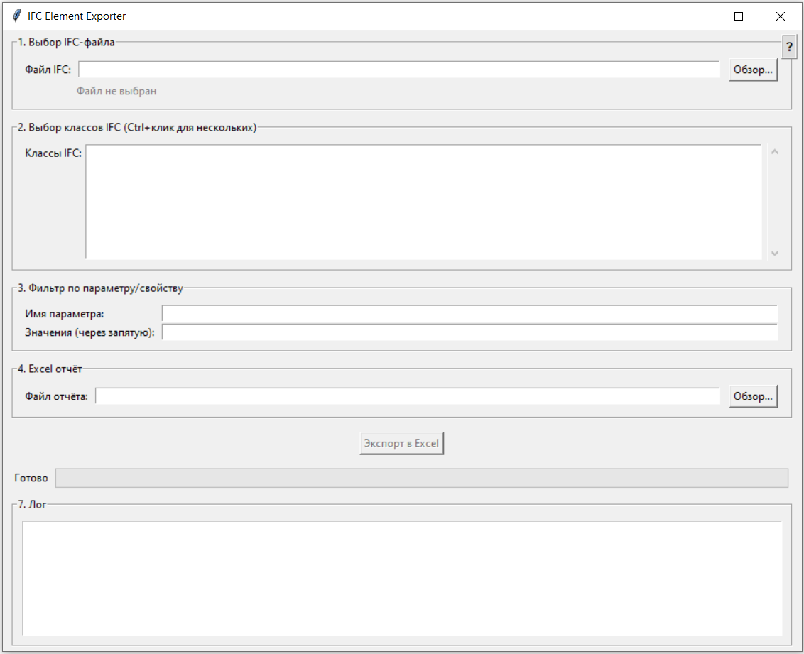
Верификация элементов IFC модели на наличие у них точек подключения (портов).
Ключевой функционал:• Проверка оборудования и инженерных элементов на наличие портов связи.
• Фильтрация элементов по конкретным IFC-классам.
• Фильтрация элементов по конкретным IFC-классам.
Преимущества:Позволяет сформировать отчет по наличию или отсутствию точек подключения у элементов IFC модели.
IFC RNP Check
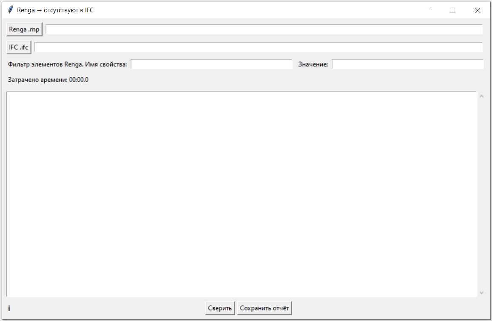
Контроль полноты выгрузки элементов из программы Renga в формат IFC.
Ключевой функционал:• Сравнение количества и состава объектов исходного проекта Renga с полученной IFC-моделью.
• Выявление 'потерянных' при экспорте элементов.
• Выявление 'потерянных' при экспорте элементов.
Преимущества:Предотвращает утерю элементов при передачи модели заказчику.
IFC Type Edition
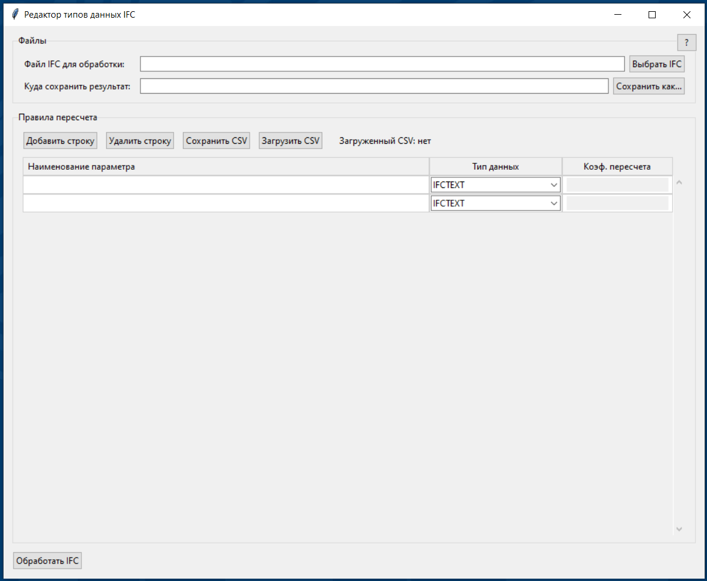
Редактирование типа данных параметров внутри IFC-файла.
Ключевой функционал:• Автоматическая работа без знания структуры и спецификации IFC.
• Пакетная замена несоответствующего типа данных (например, IfcText на IfcReal) на корректный у параметров элемента.
• Пакетная замена несоответствующего типа данных (например, IfcText на IfcReal) на корректный у параметров элемента.
Преимущества:Избавляет от необходимости ручного исправления типа данных у параметров возникающих при ошибках экспорта модели в IFC формат.
IFC IDS Checker
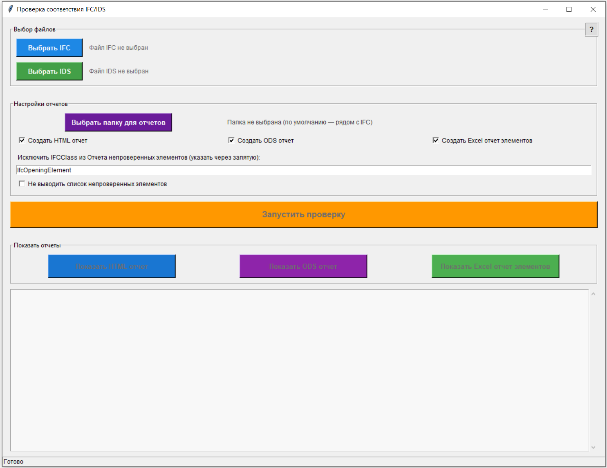
Экспресс-валидация IFC-моделей по машиночитаемым требованиям формата IDS (Information Delivery Specifications).
Ключевой функционал:• Поддержка 3 независимых режимов проверки.
• Автоматическое выявление элементов, не прошедших проверку или нарушающих условия.
• Формирование списка элементов, проигнорированных из-за отсутствия к ним требований в IDS проверке.
• Автоматическое выявление элементов, не прошедших проверку или нарушающих условия.
• Формирование списка элементов, проигнорированных из-за отсутствия к ним требований в IDS проверке.
Преимущества:Дает прозрачный отчет не только по ошибкам, но и соответствию модели требованиями заказчика по заполнению параметров.
IFC Model Editor
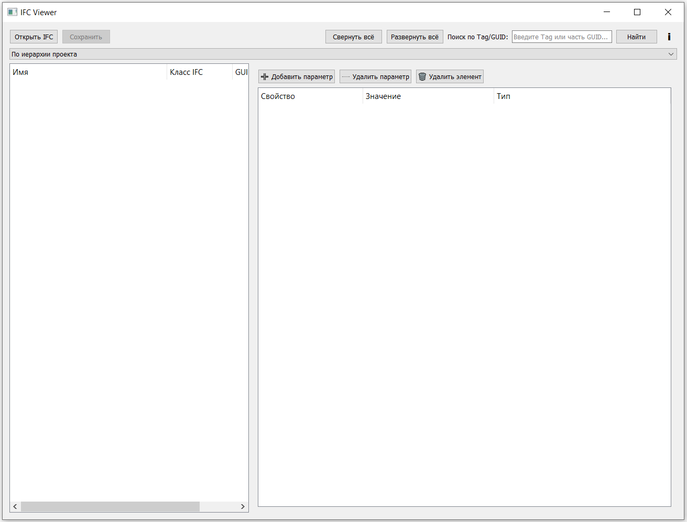
Древовидный редактор структуры и атрибутов IFC-файла без необходимости 3D-визуализации.
Ключевой функционал:• Наглядное отображение иерархии IFC (Project -> Site -> Building -> Storey -> Element).
• Корректировка существующих параметров, добавление новых наборов свойств (Psets) и значений.
• Корректировка существующих параметров, добавление новых наборов свойств (Psets) и значений.
Преимущества:Возможность вносить изменения в IFC файл без значний структуры и спецификации IFC.
IFC SpecExporter
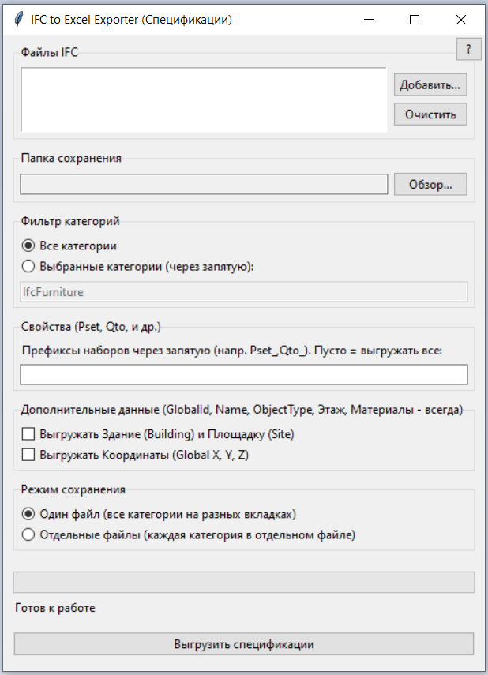
Программа для выгрузки в Excel параметров элементов из IFC модели.
Ключевой функционал:• Используется бибилотека IFCOpenShell.
• Два режима выгрузки данных в Excel.
• Возможность фильтрации для вывода данных.
• Два режима выгрузки данных в Excel.
• Возможность фильтрации для вывода данных.
Преимущества:Возможность проверить заполнение параметров элементов в табличной форме.
IFC Element Counter
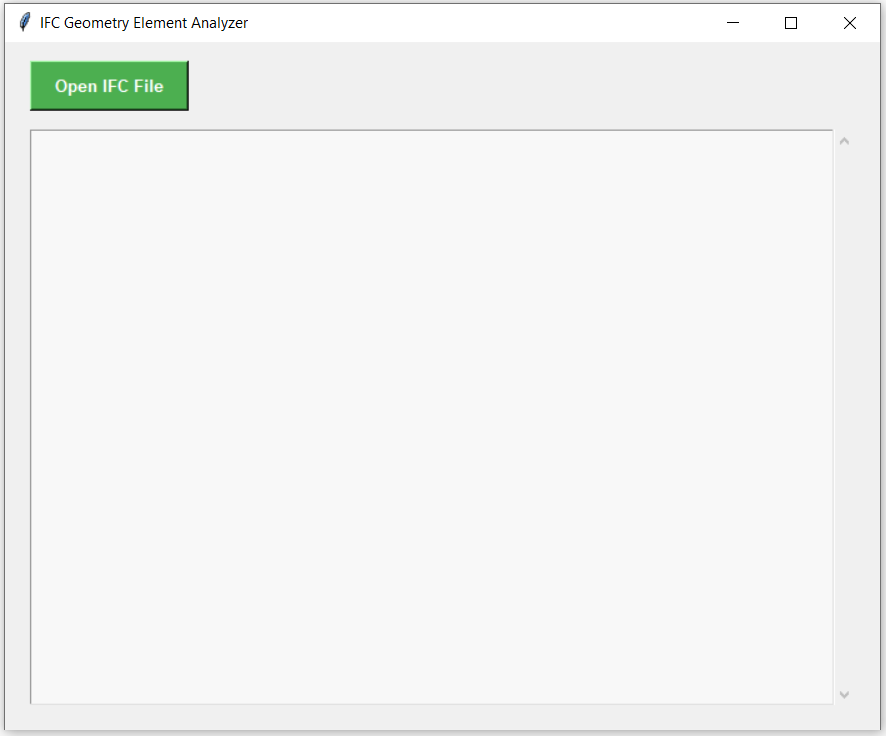
Экспресс-анализатор количественного состава IFC-модели.
Ключевой функционал:• Подсчет общего числа элементов с группировкой по стандартным классам IFC (IfcWall, IfcWindow, IfcPipeSegment и т.д.).
Преимущества:Позволяет за секунды оценить наполненность IFC модели элементами по классам IFC.
Раздел 3. Документы, PDF и Криптография
Массовый переименователь файлов по списку
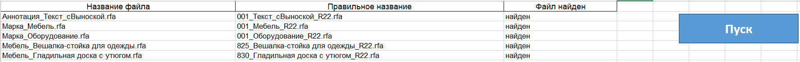
Пакетное переименование файлов согласно табличной ведомости соответствия.
Ключевой функционал:• Сопоставление исходных имён файлов с новыми наименованиями из списка.
• Безопасное копирование и переименование файлов в изолированную целевую папку.
• Безопасное копирование и переименование файлов в изолированную целевую папку.
Преимущества:Ускоренное переименование файлов с оставлением исходные файлы.
ETCP Merge
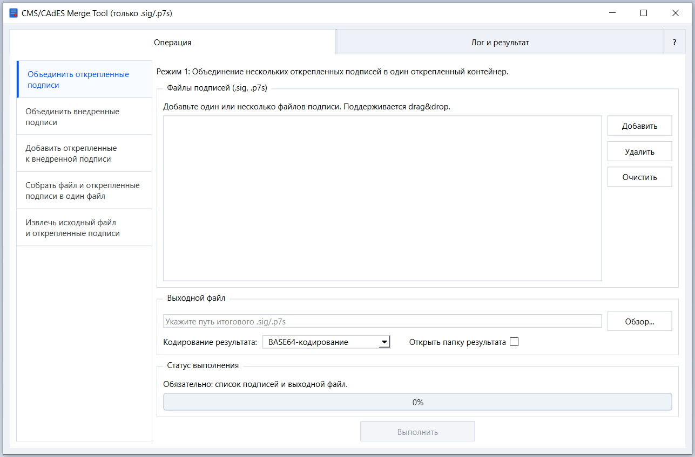
Программа по объединению различных представлений электронных цифровых подписей (ЭЦП) формата CMS/CAdES (ГОСТ) в единый файл.
Ключевой функционал:• Три режима работы:
Режим 1: Объединение открепленных подписей (.sig / .p7s) в единый контейнер.
Режим 2: Добавление подписей к существующей встроенной подписи.
Режим 3: Сборка встроенной подписи с нуля из исходного документа и открепленных подписей.
• Отчет по результатам выполнения.
• Поддержка Drag&Drop.
Режим 1: Объединение открепленных подписей (.sig / .p7s) в единый контейнер.
Режим 2: Добавление подписей к существующей встроенной подписи.
Режим 3: Сборка встроенной подписи с нуля из исходного документа и открепленных подписей.
• Отчет по результатам выполнения.
• Поддержка Drag&Drop.
Преимущества:Поддержка DER/BASE64, интеграция с КриптоПро CSP + встроенный Python-fallback
ИУЛ
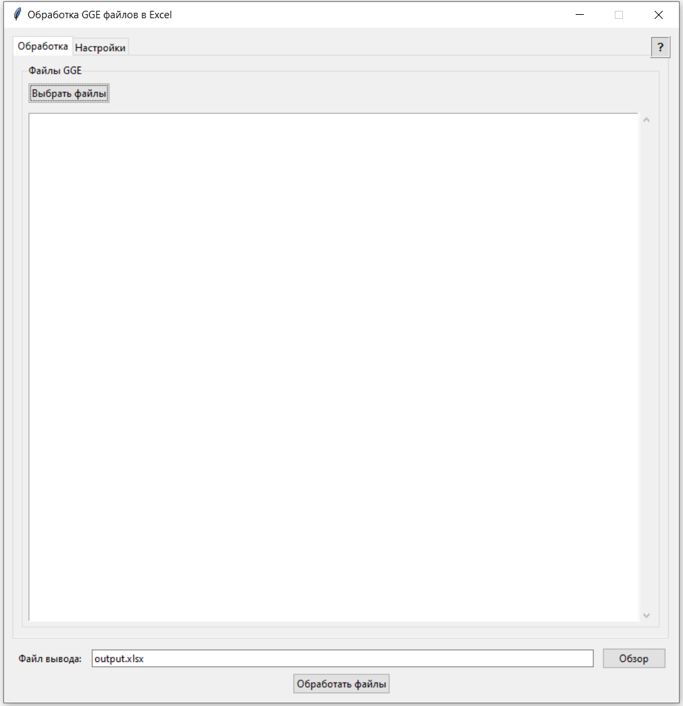
Автоматизированное формирование Информационно-удостоверяющих листов (ИУЛ).
Ключевой функционал:• Заполнение атрибутов ИУЛ на основе метаданных комплекта документации.
• Пакетное наложение подписей(факсимиле) ответственных лиц.
• Поддержка различных форм представления.
• Пакетное наложение подписей(факсимиле) ответственных лиц.
• Поддержка различных форм представления.
Преимущества:Избавление ручного заполнения данных файлов и проекта, а так же ускорение подписание документа.
Сравнение HASH файлов
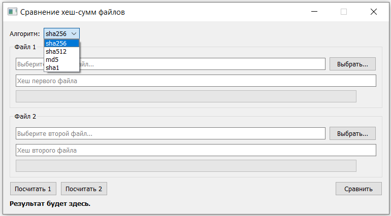
Валидация идентичности двух файлов путем сравнения их контрольных сумм.
Ключевой функционал:• Расчет хэш-сумм по различным криптографическим алгоритмам (MD5, SHA-256 и др.).
• Побайтовое сопоставление файлов.
• Побайтовое сопоставление файлов.
Преимущества:Гарантированная проверка файлов на идентичность.
PDF Number
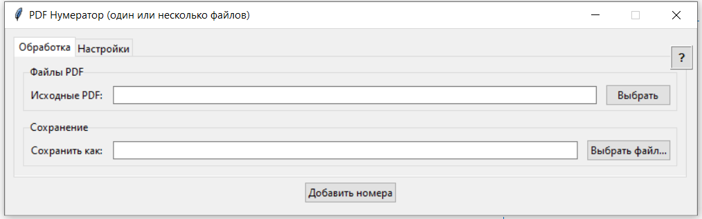
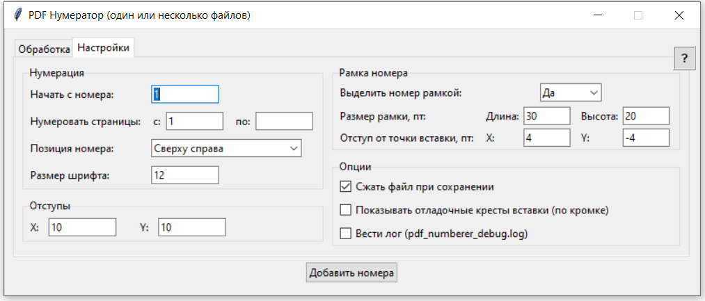
Пакетная нумерация страниц и листов в файлах PDF.
Ключевой функционал:• Наложение номеров страниц с гибкой настройкой шрифта, размера и позиционирования.
• Опциональное создание декоративной/технической рамки вокруг номера.
• Пакетная обработка множества файлов одновременно.
• Опциональное создание декоративной/технической рамки вокруг номера.
• Пакетная обработка множества файлов одновременно.
Преимущества:Избавляет от необходимости нумеровать листы вручную в графических редакторах.
Symbol Alphabet
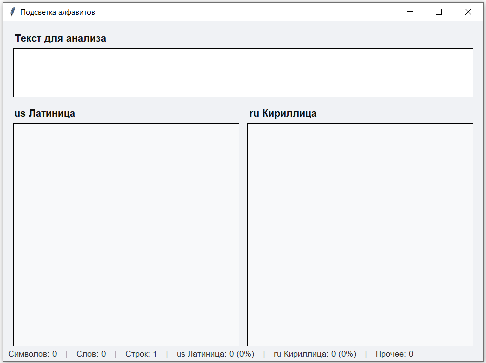
Анализ текста на наличие смешанных символов из разных алфавитов (Кириллица / Латиница).
Ключевой функционал:• Простой понятный интерфейс.
• Подсветка латинских букв, визуально похожих на кириллические (например, С, А, Е, О), и наоборот.
• Подсветка латинских букв, визуально похожих на кириллические (например, С, А, Е, О), и наоборот.
Преимущества:Исключает скрытые ошибки при поиске параметров, фильтрации и специфицировании в BIM-системах.
PDF Cleaner JS
Пакетная очистка PDF-файлов от исполняемых JavaScript-скриптов.
Ключевой функционал:• Сканирование PDF-структуры на наличие встроенного JS-кода.
• Удаление скриптов без повреждения текстового и графического содержимого.
• Пакетная обработка целых директорий.
• Удаление скриптов без повреждения текстового и графического содержимого.
• Пакетная обработка целых директорий.
Преимущества:Повышает безопасность документов и устраняет проблемы запуска файлов связанных с наличие макросов/JS.
Excel XLSX Cleaner
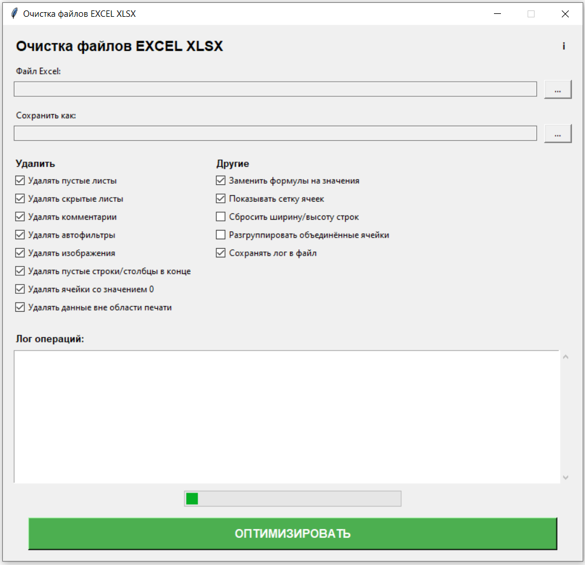
Глубокая очистка файлов Excel (.xlsx) от скрытых неиспользуемых элементов и оптимизация их размера.
Ключевой функционал:• Удаление неиспользуемых стилей, скрытых связей, стилей ячеек, остаточных макросов и накопленного мусора.
• Сокращение физического размера файла на диске.
• Сокращение физического размера файла на диске.
Преимущества:Восстанавливает производительность зависающих или перегруженных книг Excel.
PAT VIEW
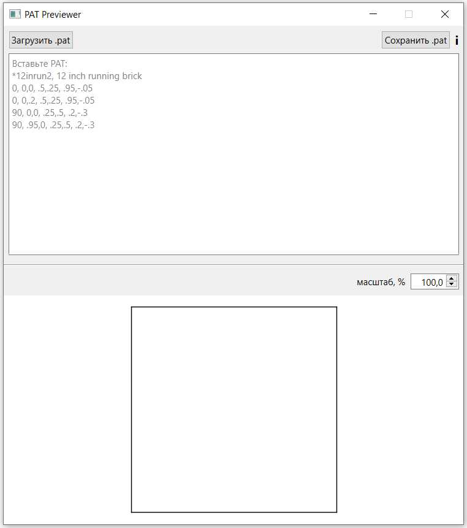
Просмотр, создание и редактирование файлов векторных штриховок формата PAT (AutoCAD/Revit).
Ключевой функционал:• Графический предпросмотр рисунка штриховки.
• Редактирование числовых параметров линий и углов.
• Редактирование числовых параметров линий и углов.
Преимущества:Удобный специализированный визуальный редактор вместо ручной правки текстовых файлов PAT.